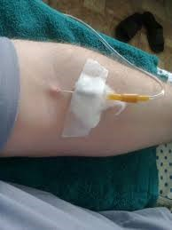

Оснащення: стерильні система одноразового використання для внутрішньовенного краплинного введення рідини, ватні кульки, серветки, пінцет, лоток. Гумові рукавички, маска, водонепроникний фартух, захисні окуляри/екран, спирт етиловий 70%, гумова подушечка, гумовий джгут, рушник, клейонка, штатив, лоток для використаного матеріалу, ємність для використаного матеріалу, який не був у контакті з пацієнтом (відро з педаллю), тонометр, фонендоскоп, протишоковий набір, ємності з дезрозчинами.
Показання: парентеральне введення ліків
Протипоказання: підвищена чутливість до лікарського препарату
|
Етапи |
Послідовність дій |
Обгрунтування |
| Підготовчий етап | 1.Уточнити чи готовий пацієнт до маніпуляції. Запропонувати пацієнту в разі потреби звернутися за допомогою до медичного працівника (надати зручного положення: рука має лежати без напруження і не звисати) | Забезпечується комфортне положення пацієнта та правильне положення руки |
| 2. Здійснити гігієнічну обробку рук, надіти маску і рукавички, фартух, маску, окуляри | Забезпечується інфекційна безпека | |
| Основний етап | 1.Під лікоть пацієнта підкласти тверду гумову подушечку. Визначити пульс на променевій артерії | Забезпеч. максимальне розгинання руки у ліктьовому суглобі. Перевірити властивості пульсу |
| 2. Накласти на плече, на 5-7 см вище ліктьового суглоба, гумовий джгут (на сорочку, рушник чи серветку) так, щоб вільні кінці були спрямовані вгору | Створюються умови для кращого наповнення вени. Попереджається травматизація шкіри | |
| 3. Перевірити пульс на променевій артерії (його властивості не повинні змінитися) | Перевірка правильності накладання джгута | |
| 4. Запропонувати пацієнту декілька разів стиснути і розтиснути кулак, вибрати найбільш наповнену вену, попросити пацієнта затиснути кулак | Сприяє кращому наповненню вени | |
| 5. Обробити ін’єкційне поле почергово двома ватними кульками, змоченими в спирті | Забезпечується інфекційна безпека | |
| 6. Обробити гумові рукавички ватними кульками, змоченими спиртом | Забезпечується інфекційна безпека | |
| 7. Зафіксувати вену стерильними серветками. Тримаючи голку зрізом догори, паралельно до поверхні шкіри провести венепункцію | Попередження проколу вени наскрізь | |
| 8. З появою крові в муфті попросити пацієнта розтиснути кулак, зняти джгут, підкласти серветку. Відрегулювати швидкість інфузії, призначену лікарем, гвинтовим затискачем (40-60 крапель за 1 хвилин) | Забезпечується відновлення току крові в вені. Забезпечується правильне виконанняпроцедури | |
|
9. Зафіксувати голку (по муфті) і частину трубки до шкіри лейкопластирем, накрити місце пункції стерильною серветкою  |
Попереджається вихід голки із вени | |
| 10. Спостерігати за станом пацієнта та роботою системи. При погіршенні стану викликати лікаря | Попереджається вихід голки із вени Забезпечується своєчасність допомоги в разі погіршення стану | |
| 11.Коли рівень розчину у флаконі знизиться до зрізу голки, закрити гвинтовий затискач, зняти серветку, лейкопластир. Покласти у лоток | Підготовка до закінчення процедури | |
| 12. Прикласти стерильну ватну кульку, змочену спиртом, до місця ін’єкції і швидким рухом вийняти голку на серветку | 12. Прикласти стерильну ватну кульку, змочену спиртом, до місця ін’єкції і швидким рухом вийняти голку на серветку Забезпечується інфекційна безпека | |
| 13. Попросити пацієнта зігнути руку в ліктьовому суглобі разом з ватною кулькою на 3-5 хвилин до припинення кровотечі | Забезпечується профілактика кровотечі | |
| 14. Запитати у пацієнта про його самопочуття. Рекомендувати пацієнтові не вставати з ліжка протягом 40-60 хв. Забрати ватну кульку | Забезпечується профілактика ускладнень | |
| Завершальний етап | 1.Продезінфікувати використане оснащення та матеріали, використану систему та відправити її на утилізацію | Забезпечується інфекційна безпека |
| 2. Зняти фартух, маску, окуляри/екран, рукавички, помістити їх у водонепроникний мішок. Вимити і висушити руки Забезпечується інфекційна безпека | 2. Зняти фартух, маску, окуляри/екран, рукавички, помістити їх у водонепроникний мішок. Вимити і висушити руки Забезпечується інфекційна безпека | |
| 3. Зробити запис про проведення процедури та реакцію на неї пацієнта у відповідну медичну документацію Забезпечується документування процедури | Забезпечується документування процедури |